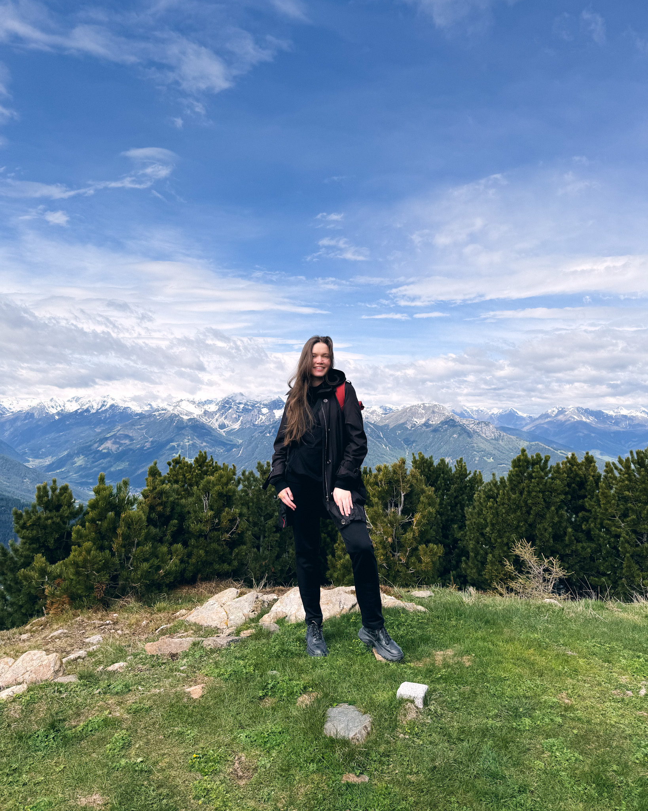

Crafting simple solutions for complex applications
Problem solving across industries
Working at a design agency taught me to quickly grasp complex problems in various domains — from gamification to meteorology. My in-house experience at startups allowed me to own the full design process and collaborate across functions.
Flexible end-to-end process
I communicate with the team, write documentation people actually read, and build processes that bring real value. If quality is the priority — conduct research and run workshops. If the deadline was yesterday — prioritize and cut the scope, not the corners.
Designer with engineering thinking
My design journey started in 2020, co-founding a restaurant management startup with university friends. Despite launching during the pandemic, it attracted customers, and was later acquired by monobank in 2023.
My professional experience is focused primarily on complex B2B systems, including agency work and in-house roles at startups. My software engineering degree helps me navigate technical constraints, communicate with developers, and design in code with AI.
My hobbies include video games, music, concerts, mobile photography, and sometimes hiking. I am also a member of several design communities in Berlin and use every opportunity to exchange knowledge and make new connections.
